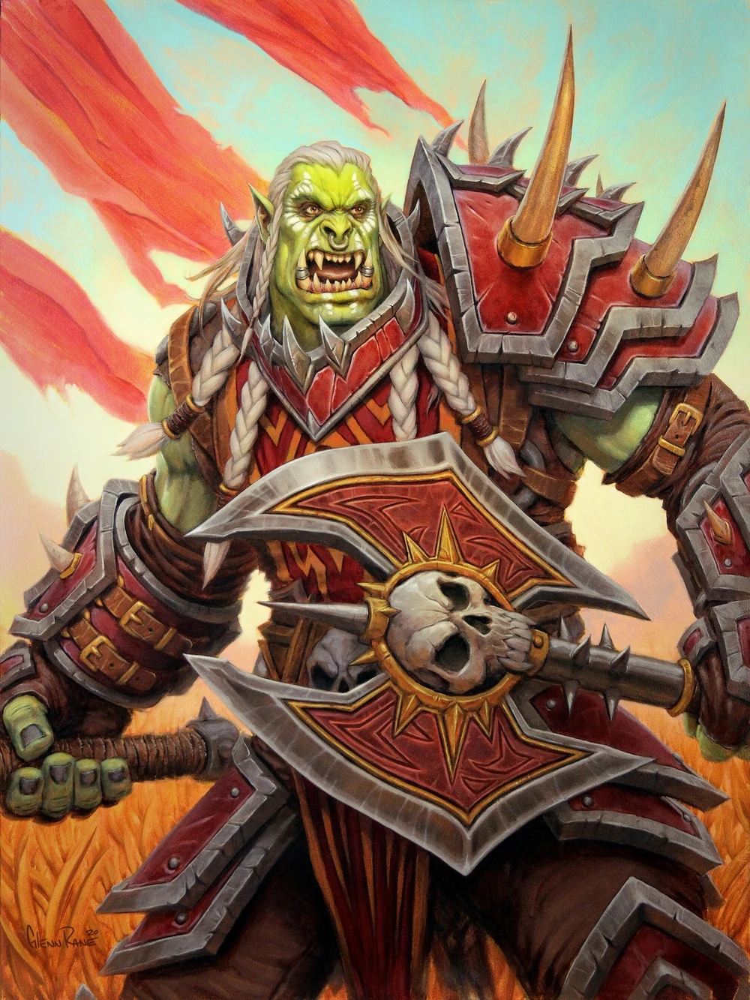
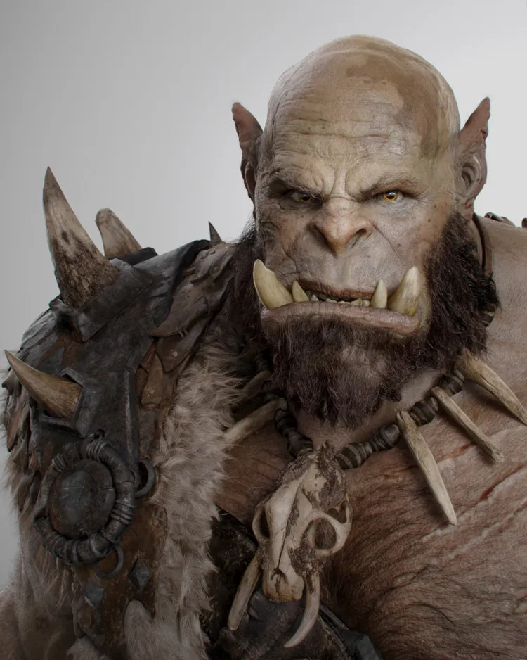
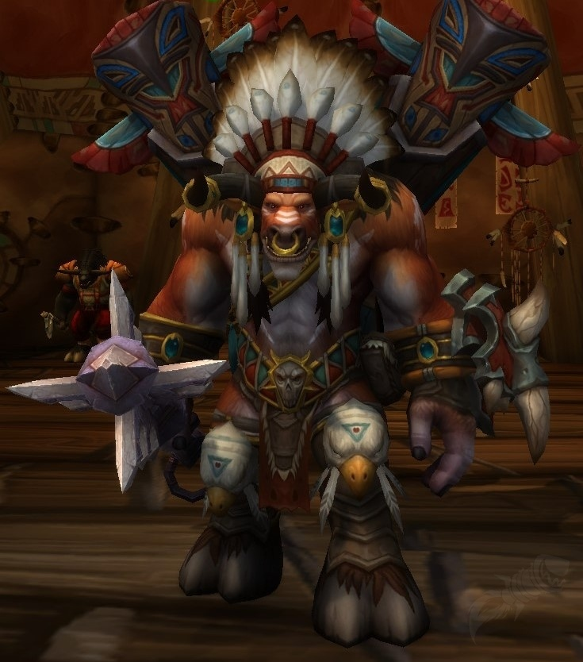

Thrall, son of Durotan and Draka, is the former Warchief of the restored shamanistic Horde, founder of the nation of Durotar in Kalimdor and one of the second wave of shaman.His parents killed by Gul'dan's assassins shortly after his birth in the beginning of the First War, he was found and raised by Aedelas Blackmoore who gave Thrall his name.
Welcome to Azeroth
Azeroth is the name of the world in which the majority of the Warcraft series is set. At its core dwells a slumbering world-soul, the nascent spirit of a titan. Long ago, it was invaded by the Old Gods, eldritch abominations from the Void. When the Pantheon arrived, the titans imprisoned the Old Gods deep beneath the earth, before healing and ordering the world, and seeding life across the planet. A great fount of magic that would nurture the land was placed at the center of Kalimdor, known as the Well of Eternity.
Horde
Thrall
Chieftain of the Frostwolf Clan

Varok Saurfang
High Overlord
High Overlord Varok Saurfang was a renowned orc warrior of the Blackrock clan, and the younger brother of Broxigar. A famed veteran of the First, Second, and Third Wars, he served as Warchief Orgrim Doomhammer's second-in-command during the Second War, and as Supreme Commander of the Might of Kalimdor during the second War of the Shifting Sands against the qiraji of Ahn'Qiraj.
Zekhan
Troll Shaman
Zekhan is a jungle troll shaman who participated in the Battle for Lordaeron. He is the son of Hekazi, who fought in the Third War alongside Varok Saurfang. His father told him tales about Saurfang and how he could slaughter ten enemies with a single blow. Zekhan eventually joined the Horde's war effort.

Orgrim Doomhammer
Chieftain
Orgrim Doomhammer was the Warchief of the Old Horde and Chieftain of the Blackrock clan during the end of the First War and the entirety of the Second War. The orcish capital of Orgrimmar, the Horde-controlled town of Hammerfall in the Arathi Highlands, and the flying battleship Orgrim's Hammer patrolling the skies of Icecrown, are named in his honor. He was also known as the Backstabber by loyalists of Gul'dan and Blackhand.
Durotan
Chieftain
Durotan, son of Garad and Geyah, was the chieftain of the Frostwolf clan, mate of Draka and father of the future Warchief Thrall.He was also a contemporary of Orgrim Doomhammer.During a Kosh'harg festival in Nagrand, Durotan met a Blackrock orc named Orgrim, son of Telkar Doomhammer, and the two became fast friends despite belonging to different clans, something very unusual in orcish society.

Baine Bloodhoof
Chieftain
Baine Bloodhoof is the High Chieftain of the tauren tribes of Mulgore and leader of Thunder Bluff.He is the son of the late tauren leader, Cairne Bloodhoof, whom he looked up to as a role model. While Baine has formidable skill on the battlefield, his true talents lie in the arena of diplomacy. He is a strong force for moderation, calm wisdom, and unity within the Horde, especially in their dealings with the Alliance.
Alliance
Anduin Wrynn
King of Stormwind
Anduin Llane Wrynn is the King of Stormwind, High King of the Alliance, and commander of all Alliance forces.When Anduin was just a boy, his father, King Varian Wrynn, was kidnapped.In Varian's absence, Anduin was named King of Stormwind under the regency of Bolvar Fordragon and the advise of Lady Katrana Prestor.
Varian Wrynn
The Wolf
Varian Wrynn was the King of Stormwind and High King of the Grand Alliance.During the First War when Varian was a young boy, his father King Llane was murdered and Stormwind was sacked by the Orcish Horde.His guardian and regent Anduin Lothar gathered the survivors and sailed to Lordaeron, where the Alliance of Lordaeron was formed.
Jaina Proudmoore
Leader of the Kirin Tor
Lady Jaina Proudmoore is the daughter of Daelin and Katherine Proudmoore, and sister of Derek and Tandred. She is considered one of the finest mages in all Azeroth and the most powerful human sorceress alive.She is the Lord Admiral of Kul Tiras, the former leader of the Kirin Tor of Dalaran, and of the port-city of Theramore.
Uther
The Lightbringer
Lord Uther the Lightbringer, or Sire Uther Lightbringer, was the first of the five paladins of the Knights of the Silver Hand along with Turalyon, Saidan Dathrohan, Tirion Fordring, and Gavinrad the Dire. Once a knight of Lordaeron and a follower of the Church of the Holy Light, under the spiritual advising of Alonsus Faol, he became the Supreme leader of the Order of the Silver Hand during the Second War, and led his brothers in arms against the orcs of the Old Horde. He was held to be the wisest and most noble of all the holy paladins.
Malfurion Stormrage
Arch-Druid of the Moonglade
Malfurion Stormrage was the first mortal druid on Azeroth, and the night elf who initiated the mainstream use of druidism among the kaldorei people ten millennia ago under tutelage of the demigod Cenarius. He is the twin brother of Illidan Stormrage, as well as the loving and beloved husband of the high priestess of Elune, Tyrande Whisperwind. Together, the two have represented the highest leadership of the night elves ever since the fall of Queen Azshara and her Highborne caste.

Medivh
The Last Guardian
Medivh was the last Guardian of Tirisfal, an ancient line of protectors bestowed with great powers to do battle with the agents of the Burning Legion. He was possessed even before birth by the spirit of the lord of the Burning Legion, Sargeras. Under his influence, Medivh contacted the orc warlock Gul'dan, and together they opened the Dark Portal, bringing the Old Horde to Azeroth. He was slain some time after by a party led by his best friend, Anduin Lothar.